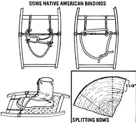

Additional tips for those who were inspired by the article in MOTHER NO. 72:
Anyone who's read Carl Heilman's article in the last issue of MOTHER ("Make Your Own Snowshoes", page 138) already has a good grounding in the art of fashioning the practical-and fun-to-use-winter footwear. However, after going over the finished piece, Carl has kindly provided us with some additional information (and a few points of clarification) that should help anyone who's tackling the project.
First of all, Carl points out, it's possible to split two bows from each quarter-log if you lay them out as in the accompanying illustration. After a bow is split off (either by using a circular saw to rip the length of the log at a point 1 inch from the hand-split edge, or by gradually tapping an axe along a line parallel to the hand-split edge), excess wood can be removed from the heartwood side with a power saw . . . to produce the roughly 1 " X 1-1/8" X 8' bow, which is then shaved into shape. (If you don't have access to a shaving bench, the bow can be clamped to a solid surface while you work it with a drawknife.)
Carl also cautions snowshoe builders who choose copper nails to connect the two halves of a shoe's tail not to drive the fasteners through the wood. Instead, drill the bow first, then cut the nail to a bit longer than the width of the tail and washer, slip it through, and gradually peen the end of the nail over the washer with many light taps from a ball-peen hammer. (By the way, the tail of the snowshoe aids in "tracking" . . . that is, it helps keep the shoes pointed straight ahead as you walk through the woods.)
When choosing your lacing material-either rawhide or neoprene-keep in mind, Carl tells us, that the former will prove best for dry snow, while the latter is a better "all condition" lacing. (Rawhide will become stretchy and soak up water in wet weather, but not so badly that it can't be used under such conditions.) And when lacing rawhide, do stretch the material, but use common sense and don't apply too much force. (Incidentally, those of you who decide to fashion your own bindings rather than purchase them ready-made can take a few tips from the traditional native American bindings pictured here.)
As you walk in your snowshoes (you'll probably want to wear them with high-top moccasins and wool socks in dry snow . . . felt pack or good leather hiking boots will serve under most conditions), be careful not to allow one shoe to step on the other, and remember never to let a snowshoe "bridge" between two high points.
That's about that. MOTHER would like to thank Carl for taking the time to provide this additional information . . . and to wish you all many happy trails through the winter woods.
|
 |
|
|